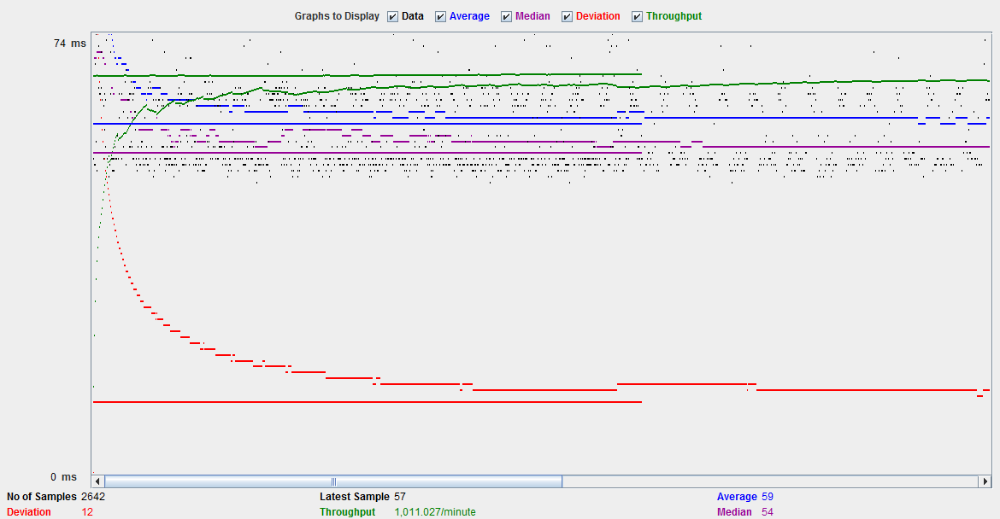

| Single-instance version cases | Graph Results Screenshot | Average Query Time(ms) | Average Search Servlet Time(ms) | Average JDBC Time(ms) | Analysis |
| Case 1: HTTP/1 thread |  | 59 | 28 | 24.5 | single version http 1 thread, base situation. |
| Case 2: HTTP/10 threads | 59 | 46.9 | 41.9 | single version http 10 thread. More busy on JDBC and Servlets, higher throughput. | |
| Case 3: HTTPS/10 threads | 47 | 46.9 | 41.52 | single version https 10 thread, same level workload but less latency and higher throughput compare to case2. | |
| Case 4: HTTP/10 threads/No prepared statements | 54 | 46.9 | 41.5 | single version http 10 thread without prepared statements, almost same with case2 | |
| Case 5: HTTP/10 threads/No connection pooling | 255 | 193.4 | 196.4 | single version http 10 thread without connection pool. Clearly huge latency and very heavy workload on JDBC and Servlet. |
| Scaled version cases | Graph Results Screenshot | Average Query Time(ms) | Average Search Servlet Time(ms) | Average JDBC Time(ms) | Analysis |
| Case 1: HTTP/1 thread | 45 | 30.1 | 28.2 | scale version 1 thread. Base, less latency compare to single case 1. Almost same level workload on JDBC and Servlet. | |
| Case 2: HTTP/10 threads | 36 | 46.9 | 41.5 | scale version 10 thread. Greatly reduce latency compare to single case2. | |
| Case 3: HTTP/10 threads/No prepared statements | 54 | 71.4 | 65.0 | single version http 10 thread without prepared statements. Same level search time compare to single case, but more overhead on JDBC and Servlet. | |
| Case 4: HTTP/10 threads/No connection pooling | 210 | 185.1 | 184.1 | scale version http 10 thread without connection pool, contribute great to every part latency when connection pool is not enabled. |